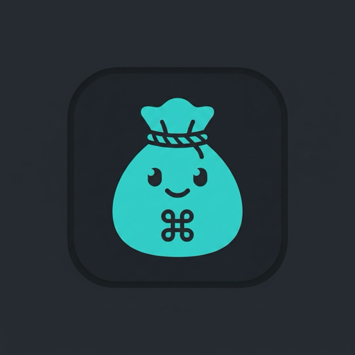
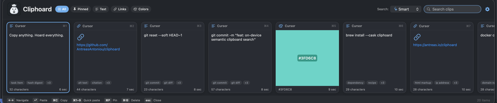

Search by meaning
Find text by the idea you remember, without having to remember every word.
Your Mac usually remembers only the last thing you copied. Cliphoard keeps a history of text, links and images, so you can find something you copied earlier and paste it again.
A complete, free clipboard manager for Mac. Search stays on your Mac. No clipboard uploads.
Download the DMG, drag Cliphoard to Applications, and open it there. Release notes and checksum.

A small companion
for everything you copy.
A useful link.
A line you love.
A passing thought.
Remember the idea,
even when the exact
words escape you.
Bring it back
to the thing
you’re making.
Less retracing your steps. More carrying on.
Text, images and links, ready when you need them. Keep Cliphoard close without giving your clipboard away.

Try a search in this interactive example. In the app, semantic text search helps you rediscover a clip from what it means.
This is a sample preview. It doesn’t read your clipboard.
Find text by the idea you remember, without having to remember every word.
Pin your regulars. Choose unlimited history when you want to keep everything.
Keep pictures alongside text and links, in the theme and layout that suit you.
Capture and search run on your Mac. Use encrypted export and import when it’s time to move.
Free is a complete clipboard manager. Pro adds more ways to find what’s inside an image.
The everyday clipboard, thoughtfully made.
Everything in Free, with a better eye for images.
Pro purchasing is being prepared.
Free is available to download today.
The entire application codebase, including Pro, is MIT licensed. The models have their own licences.
The complete feature menu
Explore the everyday tools and the protections behind them. Everything below is included in Free, except the optional Pro image tools.
Encryption protects stored content; it cannot protect an unlocked or compromised Mac. Read the privacy details or inspect the open-source code.
I’m Antreas. I built Cliphoard, and I’m pursuing independent, high-risk, high-reward AI research. I want to follow worthwhile questions beyond the hype and bring useful results back into tools like this one. I can’t promise which experiments will work.
Explore my research agendaIf Cliphoard has been useful to you, you can also support me directly. It helps me keep building open-source tools and exploring independent AI research.
Choose your amount on GitHub. Optional support, separate from Pro and the software-sales goal.
A research milestone, not a cap. Proceeds beyond it would support further work.
No reconciled reports available.
The goal is US$250,000.
A combined total appears here once reconciled reports covering the same period exist for both channels.
Published from reconciled provider reports. All figures in US dollars.
Provider-reported net sales proceeds across the Apple App Store and Stripe Managed Payments, in US dollars: after customer taxes, platform and payment fees, refunds, chargebacks and reported adjustments, and before income tax and running costs.
Reconciliation is monthly. The total moves when a report lands, rather than as a live stream, and refunds can take it down. It is not a current bank balance. Unavailable does not mean zero.
Buying Cliphoard buys the software. Optional personal support through GitHub is separate and is excluded from this software-sales goal.